Flow Matching from Scratch
CS280A Project 3 · Part B
Benny ChenYu Wan
I trained UNets on MNIST, starting with single-step denoising and then learning time-conditioned and class-conditioned flow models. Click any figure to view it at full size.
1.1 Implementing the UNet
I built a UNet for 28 × 28 grayscale MNIST digits. The encoder reduces the spatial resolution from 28 × 28 to 14 × 14 and then 7 × 7. Average pooling produces a 1 × 1 bottleneck, and the decoder upsamples back to the original resolution. Skip connections concatenate encoder features with decoder features at matching resolutions.
Convolution blocks use batch normalization and GELU. Downsampling uses stride-2 convolutions; upsampling uses transposed convolutions. The final convolution returns one channel without clipping or a sigmoid. The denoising model uses hidden dimension D = 128.
Encoder: 28 × 28 → 14 × 14 → 7 × 7 → 1 × 1
Decoder: 1 × 1 → 7 × 7 → 14 × 14 → 28 × 281.2 Visualizing the Noising Process
MNIST pixels are normalized to [0, 1]. I added Gaussian noise at seven strengths, keeping the test digit and noise tensor fixed so that only σ changes. Values are clipped only for display.
noisy = clean + sigma * epsilon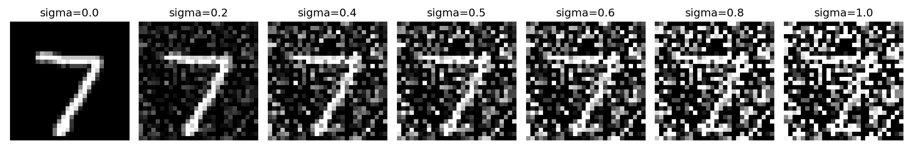
1.2.1 Training a Single-Step Denoiser
I trained the UNet for 5 epochs with batch size 256, Adam learning rate 10⁻⁴, and noise level σ = 0.5. Each batch receives fresh independent noise. The target is the clean digit, and the objective is mean squared error.
prediction = model(clean + 0.5 * torch.randn_like(clean))
loss = F.mse_loss(prediction, clean)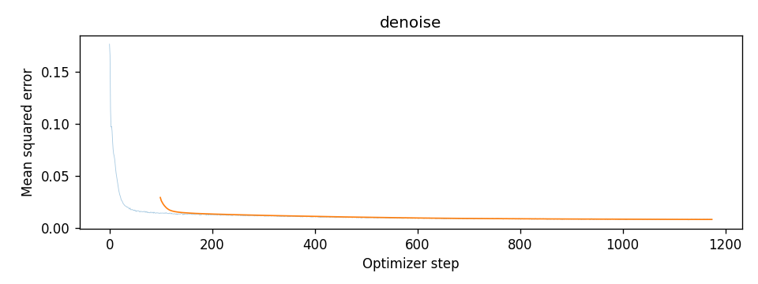
The loss drops rapidly at the start and then decreases more slowly. This indicates that the network learns to recover the training digits from noisy inputs; visual testing below checks how this behavior changes with noise strength.
1.2.2 Out-of-Distribution Testing
I evaluated the trained model on the same held-out digit at seven noise levels. The middle column, σ = 0.5, matches training; the other levels test generalization. The underlying noise tensor is fixed across columns.
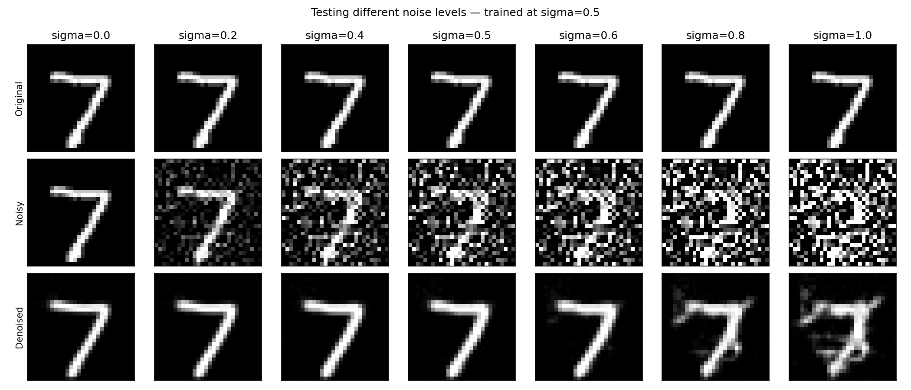
The 7 remains recognizable at low and moderate noise levels. At σ = 0.8 and 1.0, extra strokes and distortions appear. The network can handle some change in noise strength, but recovery becomes less reliable when the input is much noisier than the training condition.
1.2.3 Denoising Pure Noise
I trained a fresh D = 128 UNet for 5 epochs using batch size 256 and Adam at 10⁻⁴. This time the input is pure Gaussian noise, independent of the clean target digit. I used the same evaluation noises at epochs 1 and 5.
inputs = torch.randn_like(images)
loss = F.mse_loss(pure_model(inputs), images)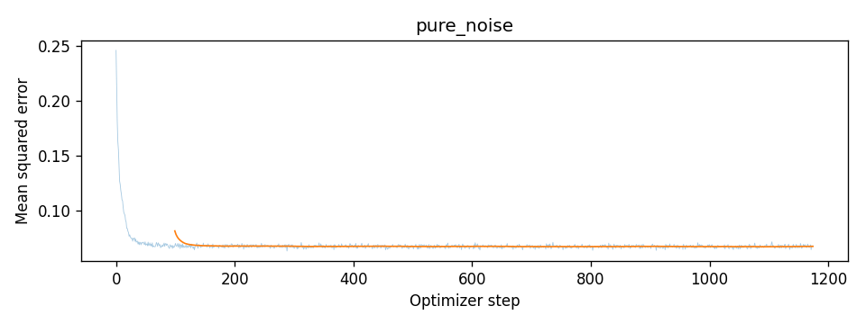
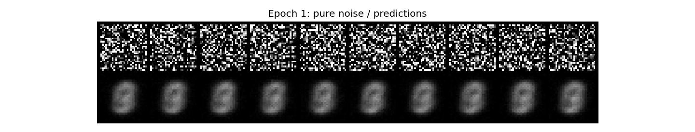
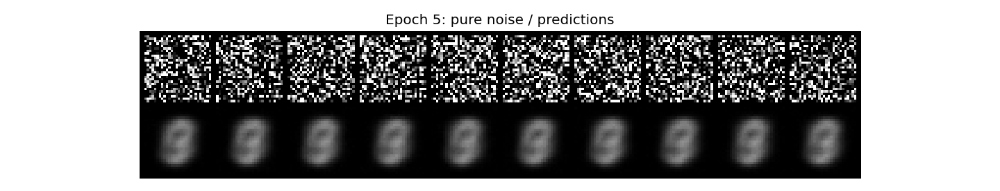
Different noise inputs produce nearly identical blurry shapes rather than distinct digits. With MSE, the optimal prediction is the conditional mean of the target. Because the input and target are independent, that mean is the average training image. The overlapping strokes reflect common regions across MNIST digits.
2.1 Time-Conditioned Flow Matching
I added two fully connected blocks that embed time and multiply the decoder features after unflattening and after the first upsampling block. Each FCBlock is Linear → GELU → Linear. The hidden dimension is D = 64.
Training samples a clean image x₁, independent Gaussian noise x₀, and a continuous time t uniformly in [0, 1). The network predicts the path velocity x₁ − x₀, rather than the clean image or the noise.
x_t = (1 - t) * x_0 + t * x_1
target_velocity = x_1 - x_0
loss = F.mse_loss(unet(x_t, t), target_velocity)2.2 Training the Time-Conditioned UNet
I trained for 10 epochs with batch size 64 and Adam starting at 10⁻². An exponential scheduler multiplies the learning rate by 0.1^(1/10) after every epoch. Checkpoints were saved at epochs 1, 5, and 10.
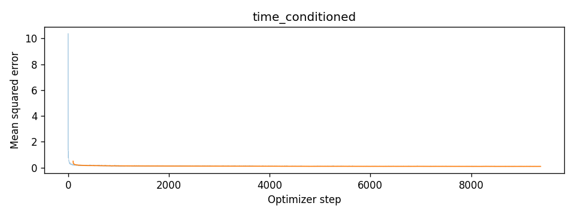
The initial loss spike falls quickly, followed by a much flatter training curve. The generated samples provide a clearer view of progress than the full-scale loss plot alone.
2.3 Sampling from the Time-Conditioned UNet
I sampled from Gaussian noise using 50 Euler updates from t = 0 to t = 1. The same seeds, 180–189, are used for each checkpoint. These are unconditioned digit identities, so the row is not required to contain every digit.
x = x + (1 / 50) * unet(x, t)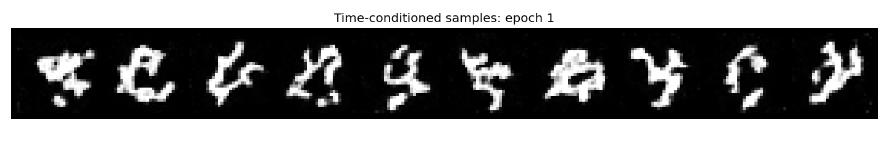
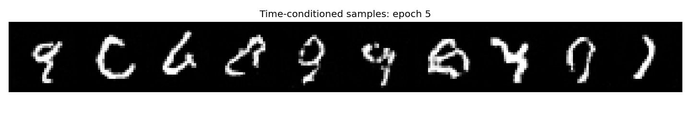
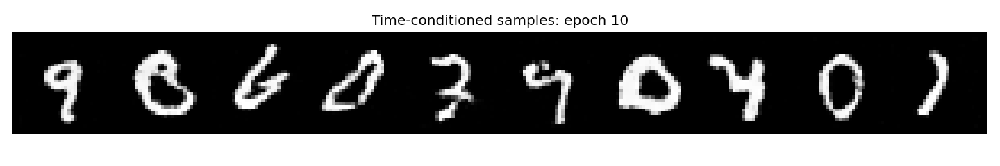
Epoch 1 contains broken and ambiguous strokes. By epochs 5 and 10, more samples form recognizable digits and cleaner loops. Some remain ambiguous, and these ten samples do not cover all digit classes.
2.4 Adding Class Conditioning
I encoded each digit label as a ten-dimensional one-hot vector and embedded it with two additional FCBlocks. A mask zeros the one-hot vector with probability 0.1 during training, allowing the same network to make unconditional predictions.
unflatten = class_embedding_1 * unflatten + time_embedding_1
up1 = class_embedding_2 * up1 + time_embedding_2The interpolated input and velocity target are unchanged from time-only flow matching. Class conditioning supplies the additional information about which digit to generate.
2.5 Training the Class-Conditioned UNet
I trained a fresh D = 64 model for 10 epochs, with batch size 64, class dropout probability 0.1, and Adam starting at 10⁻². The exponential scheduler again uses gamma = 0.1^(1/10).
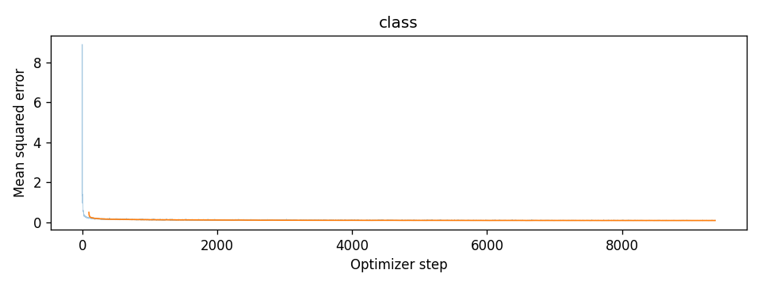
2.6 Class-Conditioned Sampling
For each checkpoint, I generated four examples of every digit using 300 Euler steps and guidance scale γ = 5. The initial noise seed is fixed at 180. Each row contains labels 0–9.
v_cfg = v_unconditional + 5 * (v_conditional - v_unconditional)This Part B guidance convention differs from Part A, which adds its guidance term to the conditional prediction.
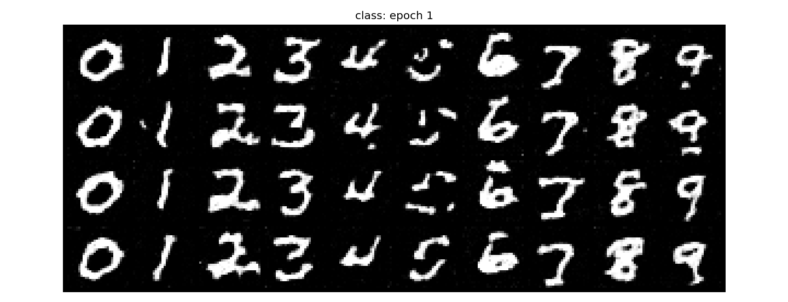
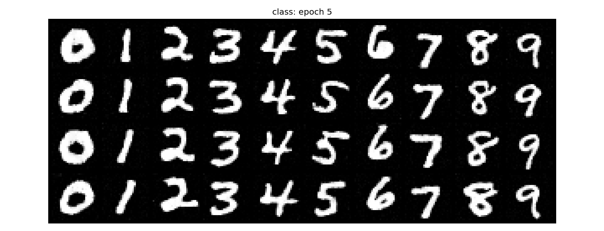

Most requested digits are visible even after one epoch, although some 5s and other strokes are incomplete. At epoch 10, the digit rows are substantially cleaner and more consistent. Shapes still vary across the four instances of each class.
Removing the Learning-Rate Scheduler
I trained an independent model with the same architecture, batch size, class dropout, and 10-epoch budget, but removed the scheduler and used a constant Adam learning rate of 10⁻³. Both experiments reset the initialization seed and use the same data-loader seed. Sampling also uses the same labels and seed.
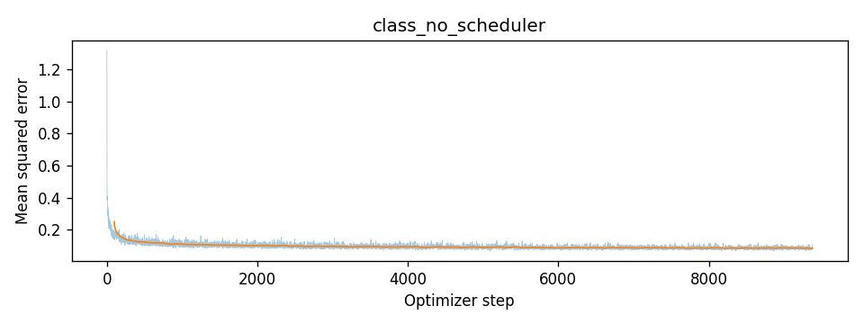
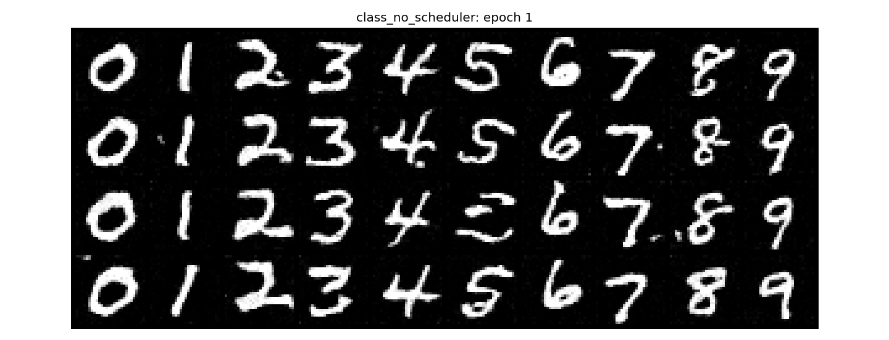
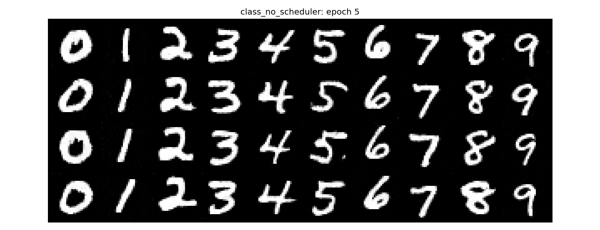
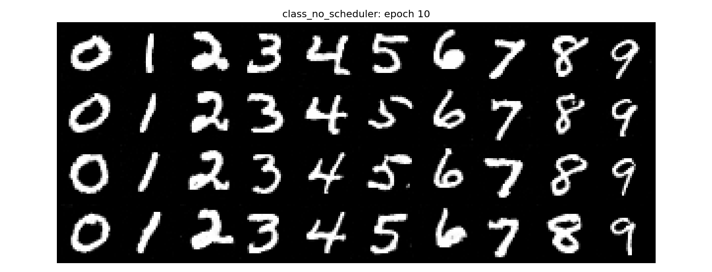
The lower constant learning rate avoids keeping the relatively large initial 10⁻² rate throughout training. Both epoch-10 grids contain readable digits with broadly similar visual quality, though individual stroke shapes differ. This is a visual comparison, not a measured accuracy or distribution-quality score. The simpler setup removes scheduler tuning but still requires choosing a suitable fixed learning rate.
Bells & Whistles: A Better Time-Only Model
I continued the epoch-10 time-only checkpoint for 10 additional epochs. The architecture stayed unchanged. I initialized a fresh Adam optimizer at a constant learning rate of 10⁻⁴ and kept batch size 64. The before/after comparison uses the same ten seeds and the same 50 Euler steps.
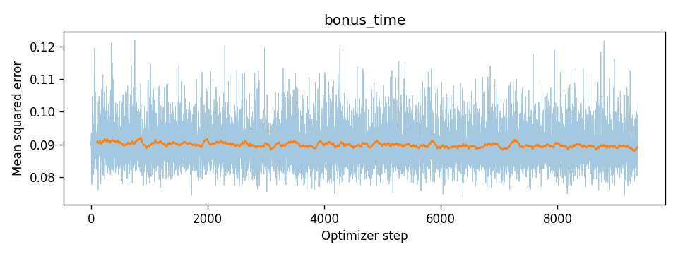
The improvement is modest: several strokes are cleaner, and the fifth sample becomes a more recognizable 3. Some samples remain ambiguous, including the second loop-like shape. Extra training refines individual digits but does not remove every failure or guarantee broader diversity.
Experiment Settings
| Experiment | D | Batch | Epochs | Adam learning rate |
|---|---|---|---|---|
| Single-step denoising | 128 | 256 | 5 | 10⁻⁴ |
| Pure-noise denoising | 128 | 256 | 5 | 10⁻⁴ |
| Time-conditioned flow | 64 | 64 | 10 | 10⁻², exponential decay |
| Class-conditioned flow | 64 | 64 | 10 | 10⁻², exponential decay |
| No-scheduler comparison | 64 | 64 | 10 | 10⁻³ |
| Extended time-only model | 64 | 64 | 10 additional | 10⁻⁴, fresh optimizer |
MNIST uses 60,000 training images and 10,000 test images. Training uses only the training split. All image values are normalized to [0, 1]; clipping is used only for visualization.
Reference: CS180/280A Project 3, Part B assignment and starter notebook.